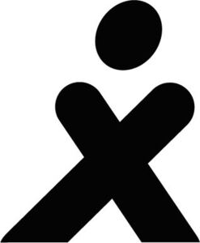

Trade Mark Journal No.2026/003 16 January 2026
WO0000001893704 (3,5,10,25,30,32)
Office of origin: Switzerland
Date of International Registration:17 October 2025
Date of designation in the UK:
17 October 2025

International priority date claimed: 26 September 2025
(Switzerland)
(838105)
- Class 3
- Eye make-up removers; make-up removing products; after-sun creams and preparations; non-medicated ointments used in sunburn prevention and treatment; anti-aging moisturizers; anti-aging skin care preparations; aromatic essential oils; breath fresheners other than for medical use; ethereal essences and oils; essential oils for cosmetic use; essential oils; eyebrow shadows in the form of pencils and powders; eyebrow cosmetics; eyebrow pencils; eye compresses for cosmetic use; eye make-up products; bath and shower gels and salts, other than for medical use; creams, oils, lotions, sprays, pencils and balms for cosmetic use; emulsions, gels and lotions for skin care; temporary tattoos for cosmetic use; eyeliner pencils; solid powder for compacts (cosmetics); pre-moistened cosmetic wipes; pre-moistened or impregnated cleansing pads, tissues or wipes; moisturizing creams, lotions and gels; facial creams for cosmetic use; facial lotions for cosmetic use; beauty masks for the face; facial cleansing grains; facial cleansers; facial lotions for cosmetic use; face glitter; skin lotions for cosmetic use; skin care preparations; non-medicated skin-cleansing preparations; adhesives for affixing false eyelashes; cosmetic preparations for skin care and treatment; creams and lotions for cosmetic use; facial masks for cosmetic use; cosmetic preparations for body care; cosmetic preparations; cosmetic oils, creams and lotions for the skin and body for topical use; make-up products for the face; wipes impregnated with make-up removing preparations; cleansing wipes impregnated with cosmetics; mouthwashes, not for medical use; non-medicated toiletry preparations and cosmetic products; non-medicated lip protection products; non-medicated preparations for the relief of sunburn; non-medicated dentifrices; non-medicated scrubs for the face and body; non-medicated diaper rash ointments and lotions; massage oils and lotions; perfumery, essential oils, cosmetics, hair lotions; perfumery products; exfoliants; aromatics (essential oils); cleaning, polishing, scouring and abrasive preparations; cleaning solutions for spectacle lenses; make-up removing milk; cleansing wipes impregnated with cosmetics; make-up products and cosmetics; make-up powder; beauty masks for the face; beauty care preparations; soaps; bleaching preparations and other substances for laundry use; laundry detergents, bleaching preparations; cotton balls for cosmetic use; cotton balls for cosmetic use; cotton buds for cosmetic use; cosmetics for eyelashes; mascara; dentifrices; decorative transfers for cosmetic use.
- Class 5
- Decongestants; topical analgesics; anesthetics; anti-allergics; anti-arrhythmics; antibacterial pharmaceutical products; antihypertensives; anticoagulants; medicines for human purposes; medicines; pharmaceutical preparations acting on the central nervous system; eye patches for medical use; eye pads for medical use; eye pads for medical use; eye compresses; eye drops; bath salts and bath preparations for medical use; tranquillizers; biochemical preparations for medical use; medicated candy; chemical-pharmaceutical preparations; cholesterol-lowering agents; disinfectants; dietetic substances for medical use, food for babies; dietetic preparations for medical use; dietetic substances and foodstuffs for medical or veterinary use, food for babies; dietetic food supplements; dietetic substances consisting of vitamins, minerals and trace elements, either individually or in combination; nutritionally fortified food products for medical use; drugs for medical use; anti-inflammatory analgesic plasters; aluminum acetate for pharmaceutical use; fungicides, herbicides; fungicides; nutraceuticals used as food supplements; sexual stimulation gels; medicated beverages; powdered fruit-flavored mixtures for beverages for use as dietary supplements; hop extracts for pharmaceutical use; hygiene preparations for medical use; immunostimulants; insect repellents; capsules for medicines; tablets for pharmaceutical use; pharmaceutical preparations containing caffeine; caffeine preparations for medical use; caffeine preparations for use as stimulants; compresses; lipid-lowering agents; local anesthetics; anti-allergics; medicinal creams for skin care; medicinal health care preparations; medicinal drinks; medicated preparations for skin care; medicated compresses; medicinal herbs; medicinal infusions; medicated muscle relaxants for the bath; medicated nasal-spray preparations; medicated lozenges; medicinal preparations and substances; medicated preparations for skin treatments; medicinal sprays; medicated douches; medicinal tea; beverages enriched with vitamins for medical use; products for the treatment of burns; multivitamin preparations; muscle relaxants; beverages used as dietary supplements; food supplements consisting of vitamins; food supplements for humans and animals; food supplements for human consumption; food supplements for controlling cholesterol; nutritional supplements; nutritional supplement mixtures for beverages in the form of powders; nasal and oral spray preparations used for stimulating the central nervous system; nervines; ophthalmological preparations; preparations for ophthalmic use; herbal supplements; vitamin supplement patches; plasters, material for dressings; pharmaceutical products for the cardiovascular system; pharmaceutical preparations and substances against allergies; pharmaceutical drugs; pharmaceutical products, medical and veterinary preparations; pharmaceutical healthcare preparations; pharmaceutical preparations for coughs and colds; pharmaceutical preparations for the treatment of sun erythema; pharmaceutical preparations for skin care; pharmaceutical substances and preparations with anti-inflammatory properties; pharmaceutical preparations and substances with analgesic properties; pharmaceutical preparations and substances; pharmaceutical preparations for inhalation used in the treatment of pulmonary hypertension; pharmaceutical preparations for the treatment of sporting injuries; pharmaceutical and veterinary products; pharmaceutical preparations for wounds; phytotherapy preparations for medical use; therapeutic preparations for the cardiovascular system; preparations for the diagnosis and treatment of disorders relating to sexual reproduction and fertility; preparations for treating colds; anti-migraine preparations; cleaning solutions for contact lenses; non-prescription medicines; ointments for pharmaceutical use; hypnosedatives; soporifics; pain relief preparations; syrups for pharmaceutical use; decongestant nasal sprays; solutions for eye irrigation; central nervous system stimulants; antiallergic tablets; medical dressings; digestives for pharmaceutical use; viscoelastic agents for ophthalmic use; vitamin and mineral food supplements; vitamin B preparations; vitamin compositions; vitamin preparations; materials for dental fillings and dental impressions.
- Class 10
- Anti-rheumatism bracelets; anti-rheumatism rings; sexual activity apparatus, devices and articles; bracelets for medical use; chemically activated cold compresses for medical use; chemically activated hot compresses for medical use; suture materials; ice bags for medical use; electric massage apparatus; electronic muscle stimulators for medical use; physiotherapy apparatus; medical belts; cushions for medical use; massage apparatus; orthopedic articles; thermal first-aid pads; vibromassage apparatus.
- Class 25
- Clothing, footwear, headwear.
- Class 30
- Candy; bread, pastry and confectionery products; bubble gum (confectionery); petit-beurre biscuits; chai tea; fruit ices, saffron (seasoning); fruit ices; breakfast cereals; cereal bars; cereal-based snacks; gummy candy; gummy candy; coffee, tea, cocoa; chewing gum, not for medical use; cookies (biscuits); breadsticks; herbal teas other than for medicinal use; herbal teas; food flavorings, other than essential oils; snacks with muesli; pastilles (confectionery); allspice; tea; tea beverage with milk; processed cereals; sugar-free chewing gum (confectionery).
- Class 32
- Non-carbonated soft drinks; alcohol-free beverages; flavored waters; beers; powders for effervescing beverages; pastilles for effervescing beverages; energy drinks; soft drinks flavored with fruit; beverages based on fruit and fruit juices; concentrated fruit juices; fruit-flavored beverages; guarana beverages; aerated water, aerated fruit juices; concentrates for making non-alcoholic beverages; concentrates, syrups and powders for preparing non-alcoholic beverages; mineral and aerated waters and other non-alcoholic beverages; mineral and aerated waters; whey-based beverages; preparations for making non-alcoholic beverages; powders for making soft drinks; syrups for manufacturing whey-based beverages; syrups and other non-alcoholic preparations for making beverages; syrups and other preparations for manufacturing beverages; mixed fruit or vegetable beverages (smoothies); soft drinks; sports beverages; waters (beverages).
Axanova AG